The interface
A wearable shoulder pad that lets the operator drive a detachable robotic arm with their own body and feel where it is.
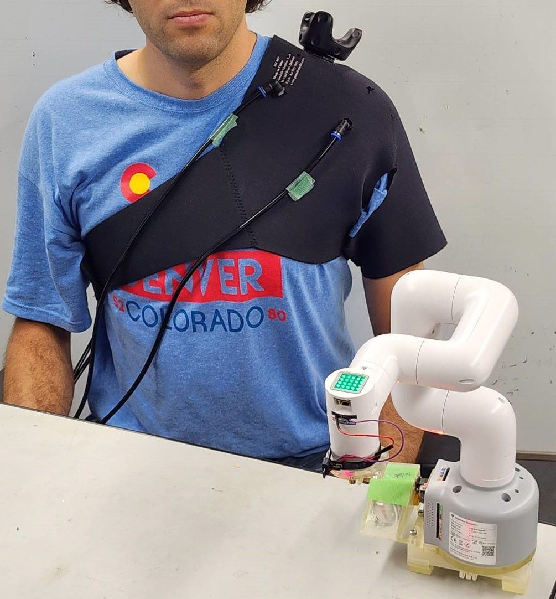
Abstract
Wearable robots such as supernumerary robotic limbs (SRLs) can augment human capability, but their effectiveness depends strongly on the operator's sense of embodiment, comprising the sense of agency (SoA) and the sense of ownership (SoO). When an SRL is detached from the body so that the operator can act in two places at once, both the sense of agency and task performance tend to degrade.
This paper presents the Multi-modal Embodiment Stimulation Shoulder Pad (MESSPa), a wearable interface that combines one-to-one motion transfer with spatially distributed pneumatic (balloon) haptic feedback on the shoulder, with the goal of preserving the sense of agency across attached and detached states. We describe the system design, the control mapping, and a controlled experiment using a 2 × 2 mixed design that crosses the control interface between groups (MESSPa, N = 13, vs. keyboard control, N = 12 from our previous study) and attachment (on-shoulder/detached) within participants, under single- and dual-task loads.
Compared with keyboard control in the detached condition, MESSPa significantly reduced task completion time and significantly improved the sense of agency in the detached state, while narrowing the performance gap between the attached and detached conditions. The sense of ownership did not change significantly. These results indicate that combining motion transfer with positional haptic feedback is an effective way to recover agency when a robotic limb is operated remotely.
Video
What the video shows
The robotic arm has been detached from the participant's shoulder harness and placed on the table. The participant wears MESSPa and controls the arm with shoulder movements. A laser pointer is mounted at the end of the arm, and a printed task sheet with nine circles lies in front of it.
On the task screen, a green circle tells the participant which printed circle to aim at. The participant moves the arm with their shoulder until the laser dot lands on that circle, then presses “Enter” on a small keypad. The target then resets to the centre and the cycle repeats.
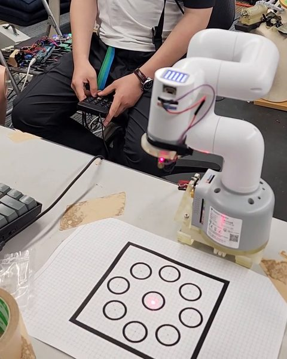
1. Start at the centreEach cycle starts with the laser dot on the centre circle.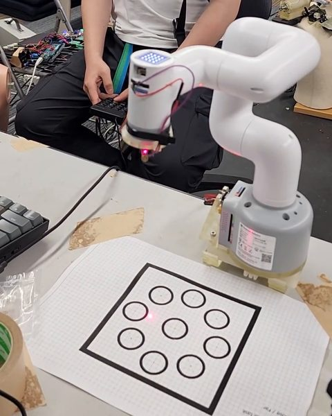
2. Move toward the targetThe participant moves their shoulder, and the arm and the dot follow.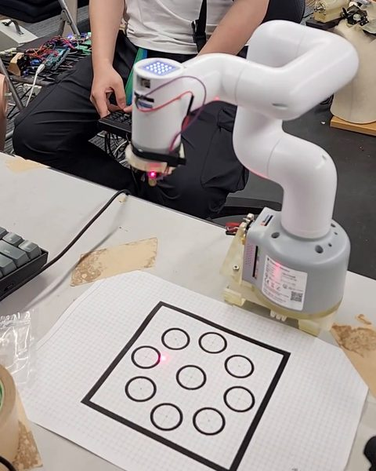
3. Reach a circleThe dot reaches an outer circle. An external camera records where it lands.
What the participant sees
How it works
Motion transfer
A single HTC VIVE tracker on top of the shoulder pad captures the operator's shoulder and upper-body motion, which is mapped one-to-one onto the robotic arm. No tracker or controller is worn on or held in the hand, and the same body-anchored mapping is used whether the arm is attached or detached.
Positional haptic feedback
Four balloons on the shoulder, one per quadrant of the arm's planar workspace, tell the operator where the arm is. The system determines which quadrant the end-effector occupies and inflates the matching balloon.
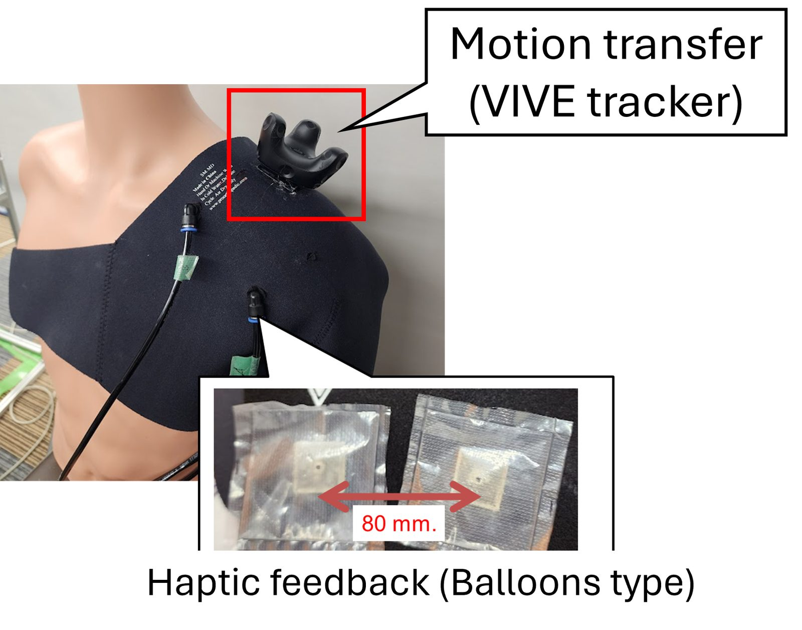
One arm, two places
The same modular arm can be worn on a shoulder harness or detached and left on a desk. MESSPa is meant to keep the feeling of control the same in both states.
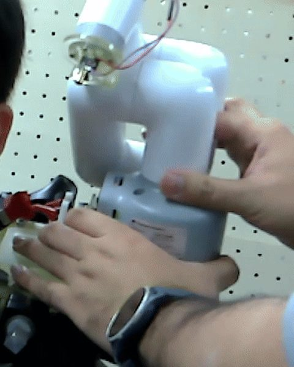
1. Mount on the shoulderThe arm is fitted onto the mount of the shoulder harness.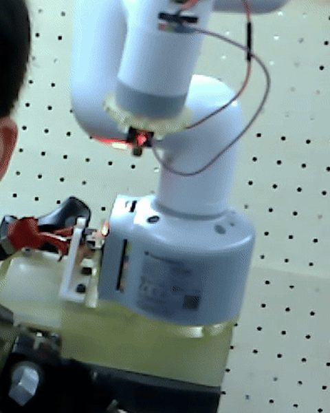
2. AttachedWorn on the shoulder, the arm moves next to the operator's head.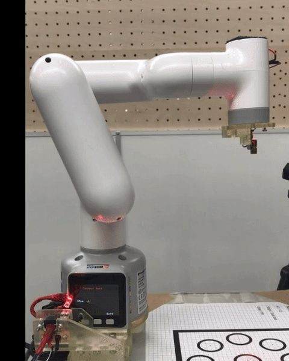
3. DetachedOn its own base on the desk, the arm is operated at a distance.
Attached and detached in the experiment
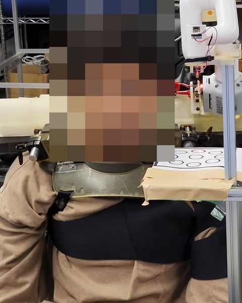
On the shoulder, front viewThe arm stands on a mount on the shoulder of the harness, with the task sheet on a stand beside it.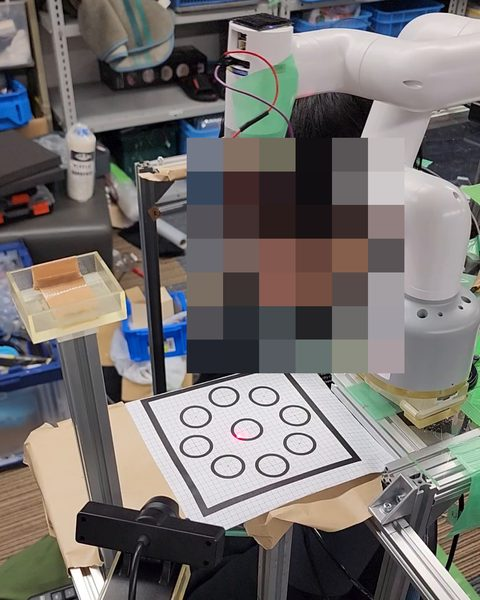
On the shoulder, from aboveThe arm aims its laser at the task sheet, and the external camera in front of the sheet tracks the dot.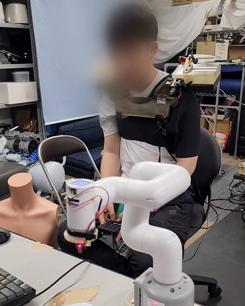
DetachedThe arm is on the desk. The participant still wears the harness, but its shoulder mount is empty.
The balloons
How they are built
Each balloon is cut from HDPE (high-density polyethylene) plastic film and heat-sealed along all four edges into a square pouch. A 3D-printed port, the small square at the centre of each pouch, fits the connector of the air line coming from that balloon's solenoid valve. The four pouches sit on the inside of the neoprene shoulder pad, against the shoulder.
How they work
A compressor supplies air, which a proportional valve regulates to 0.05 MPa. When the arm's end-effector enters a quadrant of its workspace, Unity tells an Arduino MEGA to open that quadrant's valve, and the matching balloon inflates against the shoulder. At 0.05 MPa a balloon pushes with up to 13 N: clearly perceptible, but below the level at which participants reported any discomfort.
Why balloons
Vibration motors can become uncomfortable or fade after long use. An inflating balloon gives a softer pressure cue that lasts. The balloon centres are 80 mm apart, well above the 31–44 mm two-point discrimination threshold reported for the upper body, so each one is felt separately.
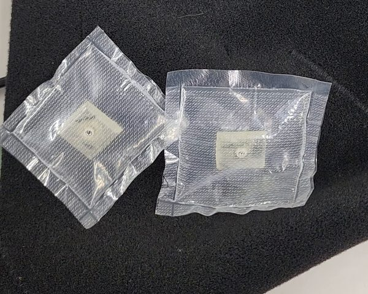
1. At restBoth balloons are flat.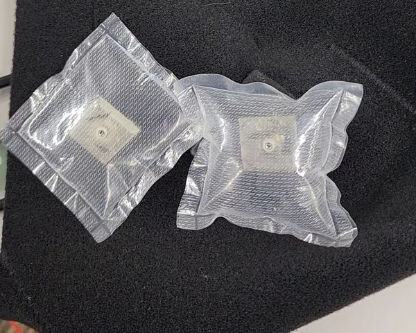
2. One balloon inflatesThe right balloon fills with air and its edges pull inward.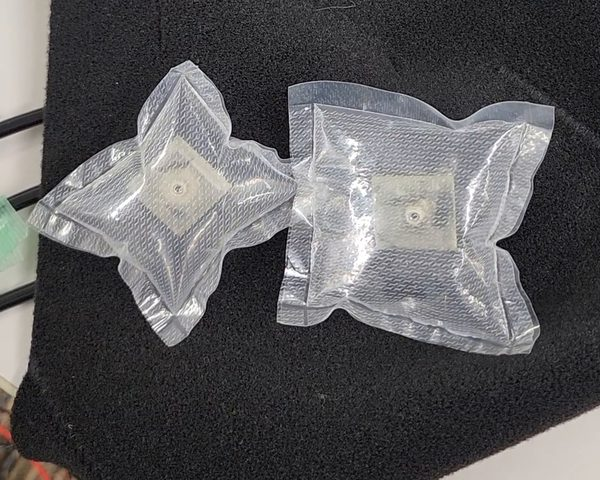
3. The next balloon inflatesThe left balloon fills next, as it would when the arm moves into another quadrant.
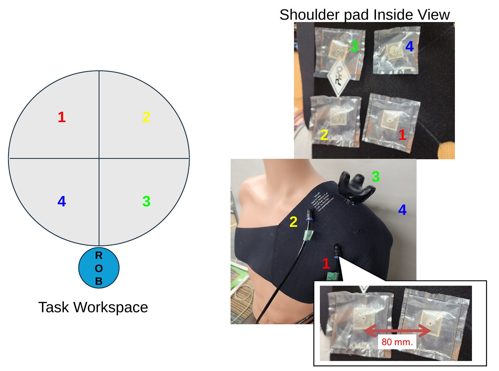
Specifications
| Item | Value |
|---|---|
| Motion tracking | One HTC VIVE tracker on top of the shoulder pad |
| Mapping used in the experiment | Relative, restricted to the two horizontal Cartesian axes (2-DoF planar) |
| Number of balloons | 4 (one per workspace quadrant) |
| Balloon size | 25 × 25 mm |
| Balloon centre-to-centre spacing | 80 mm |
| Supply pressure (proportional valve) | 0.05 MPa |
| Maximum balloon force at 0.05 MPa | 13 N |
| Robotic arm | MyCobot 280, controlled from Unity through pymycobot |
| Arm mass / harness mass | 850 g / 3.5 kg |
Results
MESSPa (N = 13) against keyboard control (N = 12, from our previous study), on-shoulder and detached, under a single and a dual task.
Key findings
With the arm detached, MESSPa was significantly faster than keyboard control in both the single and the dual task, and it narrowed, but did not fully close, the gap to on-shoulder operation. The sense of agency improved significantly; the sense of ownership did not change. In the single task, accuracy was lower with MESSPa in the detached condition; in the dual task the difference was not significant.
Task completion time
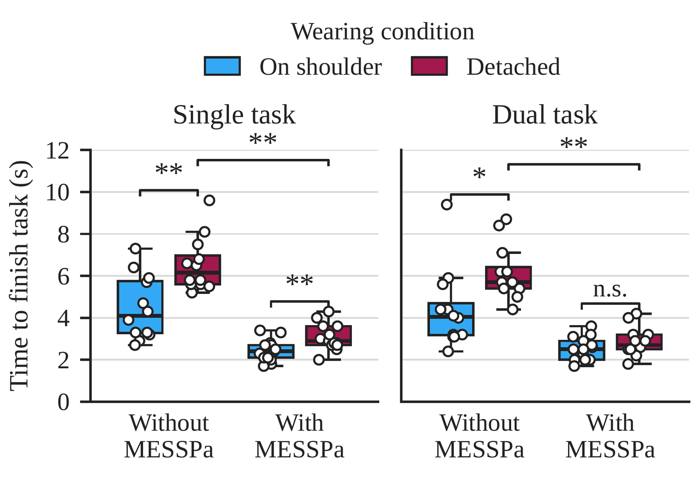
| Comparison | Single task | Dual task |
|---|---|---|
| On-shoulder vs. detached, without MESSPa | On-shoulder faster: t(11) = −6.888, p < 0.001 | On-shoulder faster: Z = −2.845, p = 0.013 |
| On-shoulder vs. detached, with MESSPa | On-shoulder faster: t(12) = −4.012, p = 0.005 | Not significant: Z = −2.205, p = 0.082 |
| Detached: with vs. without MESSPa | MESSPa faster: Welch t(15.7) = 8.365, p < 0.001 | MESSPa faster: U = 0, p < 0.001 |
Accuracy (error distance)
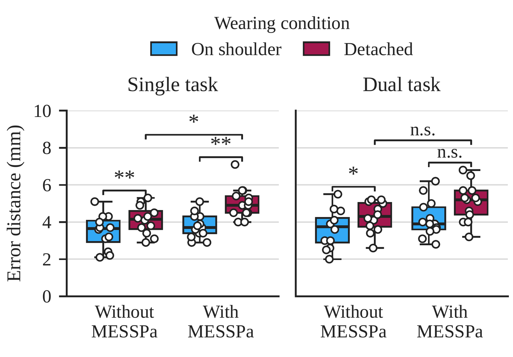
| Comparison | Single task | Dual task |
|---|---|---|
| On-shoulder vs. detached, without MESSPa | On-shoulder more accurate: t(11) = −4.439, p = 0.003 | On-shoulder more accurate: Z = −2.630, p = 0.026 |
| On-shoulder vs. detached, with MESSPa | On-shoulder more accurate: t(12) = −5.487, p < 0.001 | Not significant: Z = −2.271, p = 0.069 |
| Detached: with vs. without MESSPa | Without MESSPa more accurate: Welch t(23.0) = −2.925, p = 0.023 | Not significant: U = 41, p = 0.140 |
In the single task, accuracy was lower with MESSPa in the detached condition. This may reflect the balloon stimulus drawing attention away from fine positioning, or the difference between body-motion and keyboard control. Under the dual task, the difference between interfaces was no longer significant. The absolute error distances are small (a few millimetres), so the task may approach a precision ceiling.
Sense of agency and ownership
In the detached condition, agency improved significantly with MESSPa (t = 2.582, df = 21, p = 0.017). Ownership showed no significant change (t = −0.345, df = 21, p = 0.734).
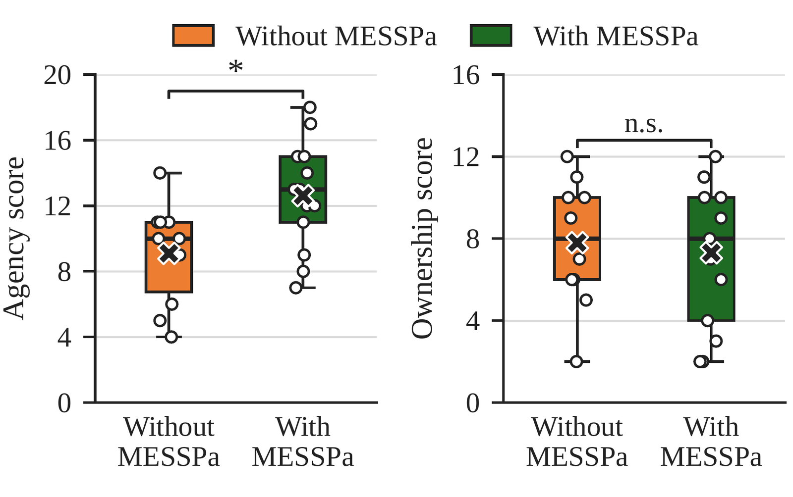
Completion time improved alongside agency while ownership was unchanged, suggesting that securing agency is sufficient to recover most of the detachment penalty. This link is correlational, and ownership may still matter for longer or finer tasks. Building ownership likely requires repeated or prolonged exposure, which motivates the long-term study planned as future work.
Limitations
- The samples were modest (N = 13 with MESSPa, N = 12 with the keyboard) and skewed toward male participants, and the task may be too easy to reveal accuracy differences.
- Attachment was confounded with viewing geometry: detaching the arm also changes the viewing distance and angle.
- The interface was compared between groups, and the keyboard data come from our previous study, so differences between groups and sessions cannot be excluded.
- Because MESSPa was compared with keyboard control, the separate contributions of motion transfer and of haptic feedback cannot be isolated.
- A single feedback encoding (quadrant-based inflation) was evaluated; richer spatial or intensity encodings remain to be explored.
System & study
The control mapping, the balloon haptics and pneumatics, and how the experiment was run.
Motion transfer mapping
MESSPa uses a relative pose mapping. At the start of a trial the tracker pose is recorded as the reference r0, and the command sent to the arm is the displacement of the current tracker pose rtracker from this reference:
The first three entries are the translation and the next three the orientation of the tracker relative to the reference, both expressed in the tracker frame and applied to the arm's base frame. A relative mapping lets the operator re-centre comfortably and makes control independent of where the tracker happens to start. The seventh entry is fixed to zero: it corresponds to the gripper degree of freedom, which is not actuated in this task. For the experiment the mapping is restricted to the two horizontal Cartesian axes to match the planar pointing task. The command is streamed from Unity to a MyCobot 280 through the pymycobot API.
Balloon haptic feedback
Vibrotactile cues can become uncomfortable or lose salience after extended actuation, so MESSPa uses pneumatic balloons, which give a softer and more sustained pressure cue.
- Placement and number. The balloons sit on the shoulder, close to where the arm is mounted and controlled when attached. Four balloons are used, one per quadrant of the arm's planar workspace around its starting position.
- Size and spacing. Each balloon measures 25 × 25 mm, with 80 mm between centres. The two-point discrimination threshold on the upper body is reported at 31–44 mm, so each balloon is felt as a distinct stimulus.
Pneumatic system
A compressor generates the supply pressure, which a proportional valve regulates to 0.05 MPa, the value established in our previous study. Solenoid valves (030E1-PSL DC24V), one per balloon, are driven by an Arduino MEGA that interfaces with Unity. Unity determines which of the four workspace quadrants the arm's end-effector currently occupies and activates the corresponding balloon.
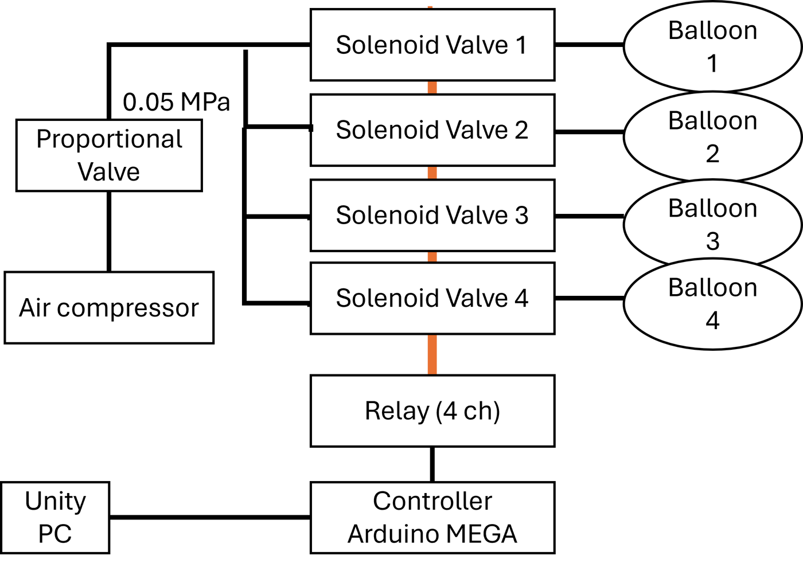
Force validation
The force at the centre of a balloon was measured on a test bed with a force gauge. At the operating pressure of 0.05 MPa, a balloon exerts a maximum force of 13 N, chosen to be clearly perceptible while remaining below the level at which participants reported any discomfort.
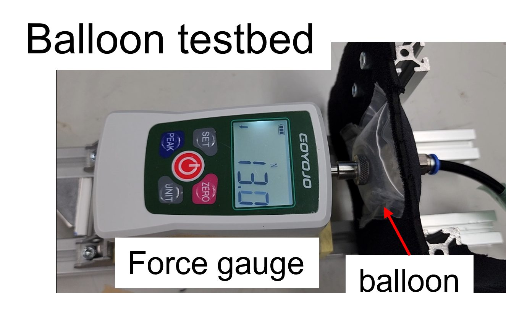
Experimental design
A 2 × 2 mixed design crossed interface (with MESSPa vs. keyboard control), varied between groups, with attachment (on-shoulder vs. detached), varied within participants. Each combination was performed under a single task and a dual task. In the MESSPa group, the order of the attachment conditions and of the single and dual tasks was counterbalanced; the keyboard group followed the procedure of our previous study.
Participants. MESSPa group: 13 volunteers (12 male, 1 female; age 21–30 years, M = 24.7, SD = 2.59). Keyboard group: the 12 participants of our previous study (11 male, 1 female; age 21–30 years, M = 24.3, SD = 2.34).
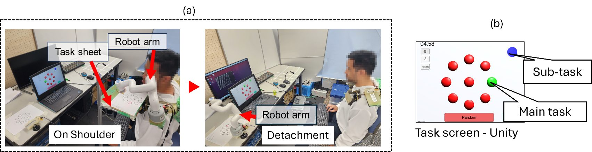
Tasks
- Main task
- Laser pointing. A green target appears on the screen and indicates which circle of the printed task sheet to aim at. The participant moves a laser pointer mounted on the arm onto the target and presses “Enter” on a small keypad. An external camera tracks the laser dot (OpenCV), and the cycle repeats for five minutes.
- Sub-task
- Colour calling (dual task only). A circle on the screen changes colour (red, blue or green) at random every 5–15 s, and the participant says the current colour aloud while performing the main task.
Procedure
- Practice
- At least three minutes each of the single and dual task, in the detached configuration, to learn the mapping.
- Attached
- Tasks with the arm on the shoulder, then the embodiment questionnaire.
- Detached
- The experimenter places the arm at a remote position, confirming the task area is still clearly visible; tasks and questionnaire are repeated.
Measures and analysis
Performance was measured by task completion time (seconds per target) and accuracy (error distance in millimetres from the target centre). Embodiment was measured with the standardized embodiment questionnaire of Gonzalez-Franco and Peck, reworded for this task and restricted to agency and ownership. Scores are computed as SoA = A1 + A2 + A3 − A4 and SoO = O1 + O2.
| Item | Statement |
|---|---|
| Sense of Agency (SoA) | |
| A1 | It felt like I could control the robot arm as if it were my own arm |
| A2 | The movements of the robot arm were caused by my actions |
| A3 | I felt as if the movements of the robot arm were influencing my own movements |
| A4 | I felt as if the robot arm was moving by itself |
| Sense of Ownership (SoO) | |
| O1 | I felt as if the robot arm was a part of my body |
| O2 | I felt as if the robot arm belonged to me |
Normality was checked with the Shapiro–Wilk test. Three planned comparisons were tested: on-shoulder vs. detached within each group (paired tests) and detached with vs. without MESSPa between groups (unpaired tests). Single-task measures used paired t-tests and Welch's t-test; dual-task measures used Wilcoxon signed-rank and Mann–Whitney U tests. p-values are Bonferroni-adjusted (three comparisons) and evaluated against α = 0.05. The detached-condition embodiment comparison used an independent-samples t-test. Analyses were performed in Python with SciPy 1.18.
Citation
@inproceedings{vimolmongkolporn2026messpa,
title = {{MESSPa}: A Multi-modal Embodiment Stimulation Shoulder Pad for Preserving the Sense of Agency in a Detachable Robotic Arm},
author = {Vimolmongkolporn, Vitvasin and Gourmelen, Guillaume and Iwasaki, Yukiko and Iwata, Hiroyasu},
booktitle = {2026 IEEE-RAS International Conference on Humanoid Robots (Humanoids)},
year = {2026},
eprint = {2611.00509},
archivePrefix = {arXiv},
primaryClass = {cs.RO}
}